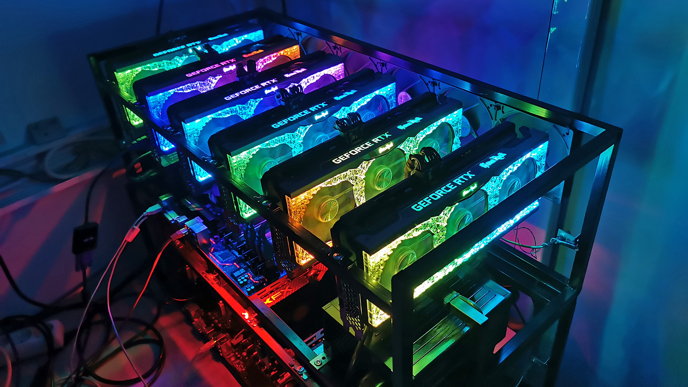

Cryptocurrency Mining Computer

I decided to start this project in 2017 when cryptocurrency sparked my interest. There was a noticeable upwards trend in the value of cryptocurrency and myself, being a computer guy, discovered that there were cryptocurrencies that could be mined. After this, I decided to do some research and realized that I could build a mining computer with many of the spare parts that I already had laying from previous computers I had built. The only extra parts I had to buy were the graphics cards. When I first built the rig in 2017 it had these specs:
- Asus Z170-A Motherboard
- Intel i5 3570k CPU
- 8GB Corsair Vengeance Ram
- EVGA 750W Power Supply
- Kingston 64GB SSD
- DIY Wooden Case
- Gigabyte Gaming RX 570 8GB x 2
- MSI RX 580 8GB
- MSI 290X 4GB
I decided to start this project in 2017 when cryptocurrency sparked my interest. There was a noticeable upwards trend in the value of cryptocurrency and myself, being a computer guy, discovered that there were cryptocurrencies that could be mined. After this, I decided to do some research and realized that I could build a mining computer with many of the spare parts that I already had laying from previous computers I had built. The only extra parts I had to buy were the graphics cards. When I first built the rig in 2017 it had these specs: